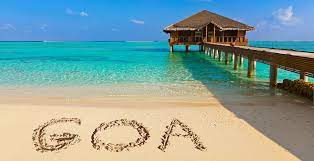
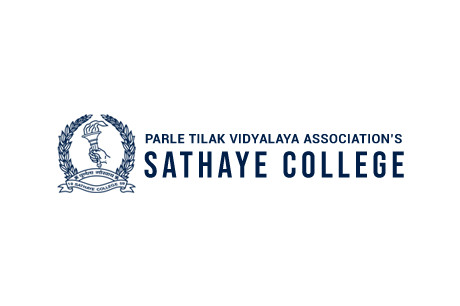

Goa is a state on the southwestern coast of India within the Konkan region, geographically separated from the Deccan highlands by the Western Ghats.It is bound by the Indian states of Maharashtra to the north, and Karnataka to the east and south, with the Arabian Sea in the west. It is India's smallest state by area and fourth-smallest by population. Goa has the highest GDP per capita among all Indian states, two and a half times as high as the GDP per capita of the country as a whole. The Eleventh Finance Commission of India named Goa the best-placed state because of its infrastructure, and India's National Commission on Population rated it as having the best quality of life in India (based on the commission's "12 Indicators"). It is the second-highest ranking among Indian states in the human development index.
Sathaye College is a college in Vile Parle (E), Mumbai in the state of Maharashtra, India. It used to be known as Parle College. It was founded in 1959 by Parle Tilak Vidyalaya Association (PTVA). It is accredited by the Accrediting Commission of Senior Colleges and Universities of the Western Association of Schools and Colleges.
